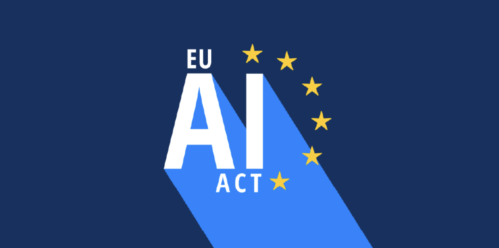

The Rules Exist. They Just Don't Have Any Teeth.

The EU AI Act is the most comprehensive AI regulation we have so far. But when it comes to environmental accountability, legal scholars Hacker (2024) and Pagallo (2025) both independently conclude it falls short.
Here's the breakdown:
- Article 9 requires documentation of computational resources - but not energy consumption.
- Article 27 mandates impact assessments - but only for a narrow class of "high-risk" deployments, and most AI models don't qualify.
- Article 95 encourages environmental sustainability codes - but participation is entirely voluntary.
There's an irony worth noting. If you apply for a Horizon Europe research grant involving AI, you're required to complete a mandatory environmental self-assessment. But for big companies like Google, Microsoft, and OpenAI? Voluntary codes of conduct only. The bar for researchers is higher than the bar for the companies actually building the tools.